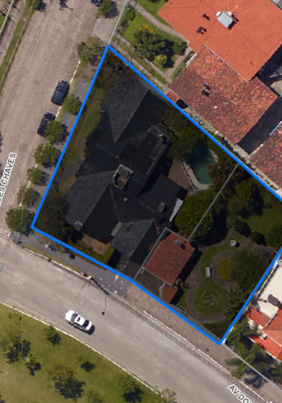

956,40 m² em esquina, 35 metros de testada pela avenida mais comercial da Zona Norte de Pelotas. Sem restrição patrimonial. Para quem constrói para si — não para revender.

Um terreno não se avalia pelo que parece — se avalia pelo que a documentação, a lei e o mercado comprovam.
Os dois lotes que formam essa esquina somam 956,40 m² segundo certidão municipal, com 35 metros de testada combinada pela Avenida Dom Joaquim — mais que o dobro da frente de qualquer imóvel vendido recentemente na via. Pelo Plano Diretor de Pelotas (Lei 5.502/2008), a área comporta até 70% de ocupação por pavimento — o equivalente a 669 m² de projeção — com altura estimada de até 13 metros. Nenhum dos dois endereços consta no Inventário do Patrimônio Cultural de Pelotas.
Traduzindo: visibilidade nas duas frentes para acessos independentes, espaço para uma sede própria ou um edifício de uso misto com comércio no térreo, e liberdade construtiva plena — sem o ônus burocrático que normalmente acompanha terrenos de valor histórico em Pelotas.
Essa é a diferença entre comprar um endereço e comprar um relatório técnico que sustenta esse endereço.
Mediana de mercado bruta: R$ 3.140/m² (2 comparáveis diretos vendidos na própria avenida). Ajustada para R$ 3,3 a 3,75 milhões pelo fator testada/esquina, conforme metodologia de homogeneização da NBR 14.653-2.
Diferente de boa parte dos terrenos de esquina ainda disponíveis na região, este já está com a documentação municipal regularizada — certidões de característica atualizadas para os dois lotes, sem pendência junto à Prefeitura. A edificação existente no lote secundário não impõe processo de inventário, tombamento ou qualquer trâmite sucessório: é uma decisão de demolição simples, sujeita apenas ao alvará ordinário de obra.
A análise que sustenta essa oportunidade não nasceu de um anúncio — nasceu de uma avaliação pericial, com metodologia de homogeneização de valor prevista na NBR 14.653-2, a mesma norma técnica usada em laudos judiciais e bancários. Rodrigo Maysonnave Fernandes, CRECI-RS 61.580, é perito avaliador certificado: cada número apresentado aqui pode ser auditado no relatório completo.
Resta a pergunta mais cara de todas: esperar por outra esquina equivalente. A resposta, levantada junto a cada portal e imobiliária da cidade, é direta — não existe outro terreno vago anunciado diretamente na própria avenida hoje. Esperar não é uma estratégia neutra; é decidir competir pelo próximo terreno desse porte sem saber quando ele vai aparecer.
Quem decide por uso próprio entende isso de forma diferente de quem decide por ROI: não é sobre o que esse terreno rende. É sobre o que ele representa ter o seu nome, naquela esquina, com aquela visibilidade — pelos próximos 20 anos.
Poucos compradores chegam a ver esse tipo de oportunidade antes que ela já tenha dono. Deixe seu contato e receba o relatório completo de viabilidade antes da visita.
P.S. — O relatório inclui o estudo que comprovou, com dados de mercado e fundamentação na NBR 14.653-2, por que esse terreno vale mais por metro quadrado do que qualquer comparável recente na região. Não é opinião — é cálculo. Vale a leitura antes de decidir.